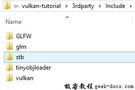
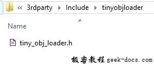
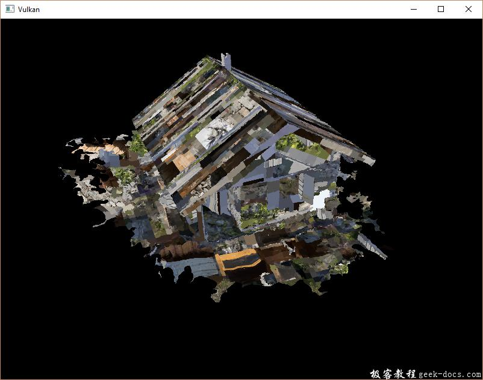
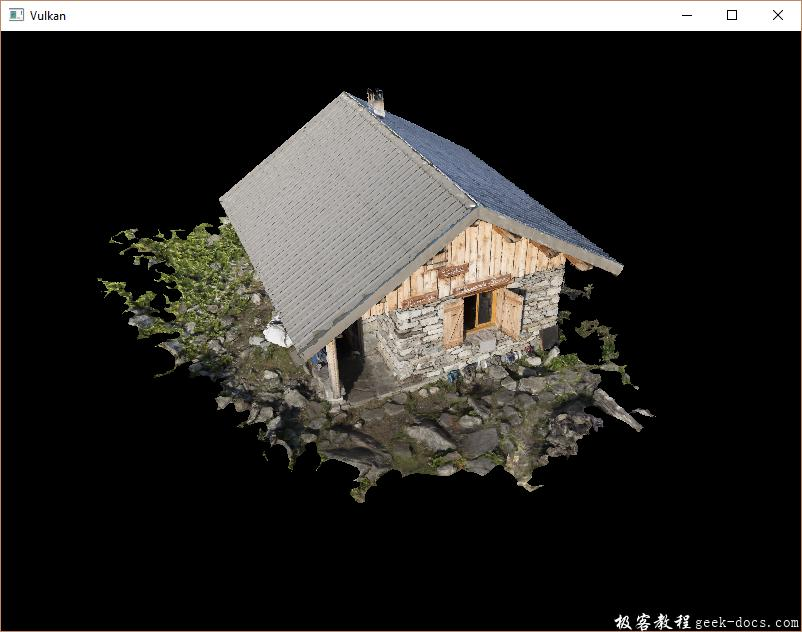

Vulkan 加载模型(Loading models)，应用程序现在已经可以渲染纹理3D模型，但是 vertices 顶点和 indices 索引数组中的几何体不是很有趣。在本章节我们扩展程序，从实际的模型文件冲加载顶点和索引数据，并使图形卡实际做一些工作。
许多图形API系列教程中让读者在这样的章节中编写自己的OBJ加载程序。这样做的问题是任何有趣的3D应用程序很快需要某种功能，但是该文件格式不支持，比如骨骼动画 skeletal animation。我们将在本章加载 OBJ 模型文件的网格数据，但是我们更多关注在网格数据与程序本身进行整合，而不是从文件中加载它们的细节
操作系统: Windows8.1
显卡: Nivida GTX965M
开发工具：Visual Studio 2017
准备工作
Library
我们将使用 tinyobjloader 库来从OBJ文件中加载vertices和faces数据。它很快速，容易集成，因为它是一个单独的文件库，如stb_image。转到上面链接的库地址，并将 tiny_obj_loader.h 头文件下载到库目录中的文件夹中。
Visual Studio
因为之前已经在VS中设置了引用的库目录在解决方案的根目录下，所以我们直接在库目录新建 tinyobjloader目录 存放 tiny_obj_loader.h 头文件即可使用。下图示例：


样本模型
在本章中我们不会涉及光照，所以它有助于使用具有烘培到纹理中的光照的样本模型。找到这样的模型的简单方法是直接在 Sketchfab 上查找。该网站上的许多模型都具有OBJ格式，并且都有 lisence 授权许可。
在本教程中我们决定使用Chalet Hippolyte Chassande Baroz模型，它是由Escadrone制作并授权的。我调整了模型的大小和方向，将其用作当前几何体的替代品：
- chalet.obj
- chalet.jpg
它有50W个三角形，所以它是我们的应用程序的一个很好的基准。在这里随意使用自己的模型文件，但是要确保它们是由一种材质构成的，尺寸约为1.5 x 1.5 x 1.5 单位。如果大于此值，则必须修改视图矩阵。将模型文件放在 shaders 和 textures 同级的新模型目录中 models，并将纹理贴图放在 textures 目录中。
添加两个新的配置变量到程序中，用于定义模型和贴图的路径：
const int WIDTH = 800;
const int HEIGHT = 600;const std::string MODEL_PATH = "models/chalet.obj";
const std::string TEXTURE_PATH = "textures/chalet.jpg";
并且更新 createTextureImage 使用该变量：
stbi_uc* pixels = stbi_load(TEXTURE_PATH.c_str(), &texWidth, &texHeight, &texChannels, STBI_rgb_alpha);
加载顶点和索引
现在我们将要从模型文件中加载顶点和索引数据，所以应该移除全局的 vertices 和 indices 数组。将它们作为类成员替换为非常量容器：
std::vector<Vertex> vertices;
std::vector<uint32_t> indices;
VkBuffer vertexBuffer;
VkDeviceMemory vertexBufferMemory;
在这里应该修改索引数据类型 uint16_t 到 uint32_t 。因为将会有超过65535个或者更多的顶点。还需要更改 vkCmdBindIndexBuffer 参数：
vkCmdBindIndexBuffer(commandBuffers[i], indexBuffer, 0, VK_INDEX_TYPE_UINT32);
tinyobjloader库与STB库一样。包括 tiny_obj_loader.h 文件，并确保在一个源文件中定义 TINYOBJLOADER_IMPLEMENTATION 以包含函数体，并避免链接错误：
#define TINYOBJLOADER_IMPLEMENTATION
#include <tiny_obj_loader.h>
我们现在编写一个 loadModel 函数，该函数使用这个库来填充顶点 vertices 和索引 indices 容器，其中包含网格中的顶点数据。在创建顶点和索引缓冲区之前应该调用它：
void initVulkan() {
...
loadModel();
createVertexBuffer();
createIndexBuffer();
...
}...void loadModel() {}
模型加载后被封装到库的数据结构中，通过调用 tinyobj::LoadObj 函数完成。
void loadModel() {
tinyobj::attrib_t attrib;
std::vector<tinyobj::shape_t> shapes;
std::vector<tinyobj::material_t> materials;
std::string err; if (!tinyobj::LoadObj(&attrib, &shapes, &materials, &err, MODEL_PATH.c_str())) {
throw std::runtime_error(err);
}
}
OBJ文件由positions， normals， texture uvs 和 faces组成，其中每个顶点指向一个位置，通过索引指向 法线或者纹理坐标。这使得不仅可以重复使用整个顶点，还可以具有单独的属性。
attrib 容器持有所有的 positions， normals 和 texture uvs 在它的 attrib.vertices, attrib.normals 和 attrib.texcoords 容器中。 shapes 容器包含所有单独的对象和面。每个面由一组顶点组成，每个顶点包含 positions，normals 和 texture uvs 对应的 indices。OBJ模型也可以定义每个面的材质和纹理，但是我们忽略它们。
err 字符串包含了加载文件过程中产生的错误和警告信息，比如缺少材质的定义。如果 LoadObj 函数返回 false，则加载才算真的失败。如上所述，OBJ 问及爱你中的面可以包含任意数量的顶点，而我们的应用程序只能渲染三角形。幸运的是， LoadObj 有一个可选参数来自动对这些面进行三角测量，这是默认启用的。
我们将组合所有的面到一个单独的模型中，所以遍历所有的形状：
for (const auto& shape : shapes) {}
三角测量功能已经确保每个面都有三个顶点，所以我们现在可以直接迭代顶点将它们直接存储到我们的 vertices 向量中：
for (const auto& shape : shapes) {
for (const auto& index : shape.mesh.indices) {
Vertex vertex = {}; vertices.push_back(vertex);
indices.push_back(indices.size());
}
}
为了简单起见，我们假设每个顶点现在是唯一的，因此简单的自动递增索引。 index 变量是tinyobj::index_t 类型的，包含了 vertex_index, normal_index 和 texcoord_index 成员。我们需要使用这些索引从 attrib 数组中 查找实际的顶点属性：
vertex.pos = {
attrib.vertices[3 * index.vertex_index + 0],
attrib.vertices[3 * index.vertex_index + 1],
attrib.vertices[3 * index.vertex_index + 2]
};vertex.texCoord = {
attrib.texcoords[2 * index.texcoord_index + 0],
attrib.texcoords[2 * index.texcoord_index + 1]
};vertex.color = {1.0f, 1.0f, 1.0f};
遗憾的是， attrib.vertices 数组是一个 float 数组，而不是glm::vec3，所以需要将索引乘以 3 。相似的，每个条目有两个纹理坐标分量。** 0，1，2**的偏移用于访问X，Y和Z分量，或者在纹理坐标的情况下访问U和V分量。
运行程序，启动优化(例如Visual studio中的 Relase，以及GCC的 -O3 编译器标志)，这是必要的，否则加载模型会很慢，你会看到如下内容：

很好，看起来几何图形是正确的，但是纹理贴图发生了什么？这个问题是由于Vulkan的纹理坐标的起点是左上角，而OBJ格式则是左下角。通过反转纹理坐标的垂直分量来解决这个问题：
vertex.texCoord = {
attrib.texcoords[2 * index.texcoord_index + 0],
1.0f - attrib.texcoords[2 * index.texcoord_index + 1]
};
再次运行程序看到如下正确结果：

所有这些艰苦的工作终于开始通过这样的演示得到回报！
删除顶点重复数据
遗憾的是我们并没有真正利用索引缓冲区的优势。 vertices向量包含大量重复的顶点数据，因为许多顶点包含在多个三角形中。我们应该只保留唯一的顶点数据，并使用索引缓冲区来重新使用它们。实现这一点的直接方法是使用 map 或者 unordered_map 来跟踪唯一的顶点和相应的索引信息：
#include <unordered_map>...std::unordered_map<Vertex, uint32_t> uniqueVertices = {};for (const auto& shape : shapes) {
for (const auto& index : shape.mesh.indices) {
Vertex vertex = {}; ... if (uniqueVertices.count(vertex) == 0) {
uniqueVertices[vertex] = static_cast<uint32_t>(vertices.size());
vertices.push_back(vertex);
} indices.push_back(uniqueVertices[vertex]);
}
}
每次从OBJ文件中读取顶点时，我们检查一下是否已经看到一个具有相同位置和纹理坐标的顶点。如果没有，我们将其添加到 vertices 并将其索引存储在 uniqueVertices 容器中。之后，我们将新的顶点的索引添加到索引容器中。如果我们已经看到完全相同的顶点，那么我们在 uniqueVertices 中查找其索引，并将该索引存储在 indices 中。
程序将会编译错误，因为使用类似我们的 Vertex 结构体，它是自定义类型作为哈希表中的键，因为需要实现两个功能：灯饰测试和散列值计算。前者通过覆盖 Vertex 结构中的 == 运算符很容易实现：
bool operator==(const Vertex& other) const {
return pos == other.pos && color == other.color && texCoord == other.texCoord;
}
通过为 std::hash
namespace std {
template<> struct hash<Vertex> {
size_t operator()(Vertex const& vertex) const {
return ((hash<glm::vec3>()(vertex.pos) ^
(hash<glm::vec3>()(vertex.color) << 1)) >> 1) ^
(hash<glm::vec2>()(vertex.texCoord) << 1);
}
};
}
该代码应该放置在 Vertex 结构体之外。需要使用以下头文件来包含GLM类型的哈希函数：
#include <glm/gtx/hash.hpp>
现在应该能够成功编译和运行程序。如果检查 vertices 顶点数量，会发现它已经从 1,500,000 缩小到 265,645！这意味着每个顶点以平均被 大约6个三角形重新使用。这绝对会为我们节省很多GPU内存。
结论
到目前为止，已经做了很多工作，但是现在你终于有了一个很好的基础。现在拥有的Vulkan的基本原理的知识足以探索更深入的课题，诸如：
- Push constants
- Instanced rendering
- Dynamic uniforms
- Separate images and sampler descriptors
- Pipeline cache
- Multi-threaded command buffer generation
- Multi subpasses
- Compute shaders
现在的程序有很多方式进行扩展，比如添加 Blinn-Phong lighting，post-processing效果和阴影映射。你应该能够了解这些效果如何从其他的API来完成，尽管因为Vulkan的明确性，但是许多概念是相同的。